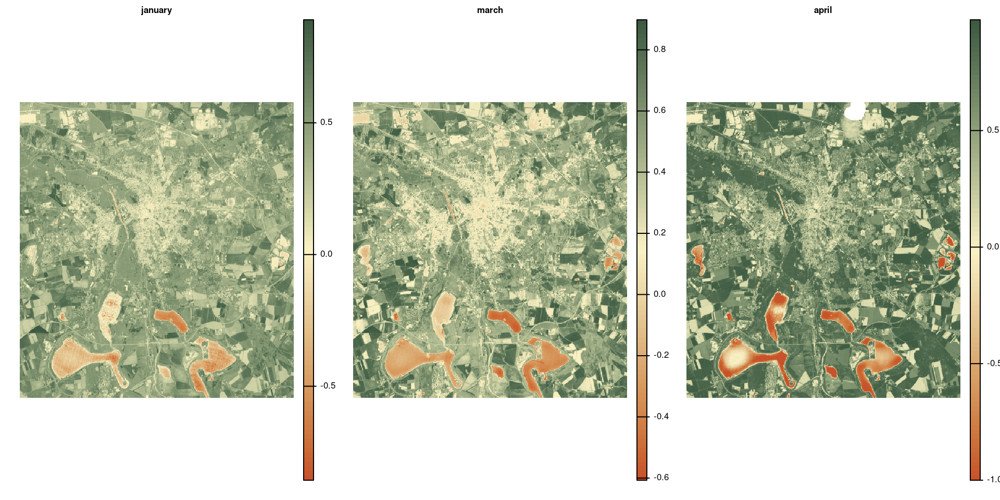

Raster Operations
2025-06-27
Calculate a summary for pixels with the same location across layers.
Calculate a summary for pixels with the same location across layers.
In terra you can use some basic functions, such as mean(), sum(), etc.
Calculate a summary for pixels with the same location across layers.
In terra you can use some basic functions, such as mean(), sum(), etc.
For other function, you need to use app().
Global summaries are calculated across all pixels of a layer.
In terra you can use global(<raster>, <function>).
Zonal statistics summarize the values of a raster using categories from another raster or geometry.
In terra, you can use zonal(<x>, <y>), where <x> is the raster with the values to summarize and <y> the raster/geometry specifying the zones.
landcover <- rast("data/landcover_4326-2015.tif")
avg_ndvi <- project(avg_ndvi, landcover) # this will also resample avg_ndvi (see the section Resampling)
zonal(avg_ndvi, landcover, fun = "mean", na.rm = TRUE) category mean
1 Artificial Land 0.3972677
2 Open Soil 0.1917675
3 High Seasonal Vegetation 0.7299292
4 High Perennial Vegetation 0.7495042
5 Low Seasonal Vegetation 0.5193868
6 Low Perennial Vegetation 0.6483166
7 Water -0.2462283Push it a bit further.
ndvi_landcover <- zonal(avg_ndvi, landcover, fun = "mean", na.rm = TRUE)
ndvi_landcover$sd <- zonal(avg_ndvi, landcover, fun = "sd", na.rm = TRUE)[, 2]
ndvi_landcover category mean sd
1 Artificial Land 0.3972677 0.14956025
2 Open Soil 0.1917675 0.18361272
3 High Seasonal Vegetation 0.7299292 0.04675755
4 High Perennial Vegetation 0.7495042 0.05914027
5 Low Seasonal Vegetation 0.5193868 0.09874814
6 Low Perennial Vegetation 0.6483166 0.09384940
7 Water -0.2462283 0.27004502Use aggregate(<raster>, <fact>, <fun>) to aggregate rasters.
<fact> is the number of cells in each direction to be aggregated.<fun> is the function used for aggregatation.avg_ndvi_aggr <- aggregate(avg_ndvi, 25, "mean")
par(mfrow = c(1, 2)) # cannot stack rasters with different resolution
plot(avg_ndvi, col = hcl.colors(100, "Fall", rev = TRUE), frame = FALSE, axes = FALSE)
plot(avg_ndvi_aggr, col = hcl.colors(100, "Fall", rev = TRUE), frame = FALSE, axes = FALSE)[1] 25 25Use disagg(<raster>, <fact>, <method>) to aggregate rasters.
<fact> is the number of cells in each direction to be aggregated.<method> is the method used for disaggregatation.avg_ndvi_disaggr <- disagg(avg_ndvi_aggr, 25, "bilinear")
par(mfrow = c(1, 3)) # cannot stack rasters with different resolution
plot(avg_ndvi, col = hcl.colors(100, "Fall", rev = TRUE), frame = FALSE, axes = FALSE)
plot(avg_ndvi_aggr, col = hcl.colors(100, "Fall", rev = TRUE), frame = FALSE, axes = FALSE)
plot(avg_ndvi_disaggr, col = hcl.colors(100, "Fall", rev = TRUE), frame = FALSE, axes = FALSE)[1] 1 1Caution
disaggr() and aggregate() are not inverse functions.
Aggregating and disaggregating a raster does not give, in general, the same raster back. Some of the original information is lost during aggregation.
resample(<x>, <y>, <method>) resamples raster <x> to raster <y>.
<method> is used to specify the algorithm used for resampling:
- `near`, for nearest neighbor.
- `bilinear`, for bilinear interpolation.
- `cubic`, for cubic interpolation.
- `cubicspline`, for cubic-spline interpolation.
- `lanczos`, for Lanczos resampling.ndvi <- rast("data/ndvi-2024.tif")
landcover <- rast("data/landcover_4326-2015.tif")
ndvi <- resample(ndvi, landcover, method = "bilinear")
avg_ndvi <- mean(ndvi)
zonal(avg_ndvi, landcover, fun = "mean", na.rm = TRUE) category mean
1 Artificial Land 0.3972643
2 Open Soil 0.1917675
3 High Seasonal Vegetation 0.7299290
4 High Perennial Vegetation 0.7495042
5 Low Seasonal Vegetation 0.5193560
6 Low Perennial Vegetation 0.6483423
7 Water -0.2462283project(<x>, <y>) performs an implicit resampling when <y> is a raster and <x> and <y> do not align.
Note
project(<x>, crs(<y>)) projects only the CRS.
project(<x>, <y>) actually resamples <x> to <y>.
In many cases resample(<x>, <y>, <method>) can be avoided by using project(<x>, <y>, <method>).
Explicit is better than implicit.
extract(<x>, <y>) extract the values from raster <x> for the geometries of <y>.
idiv <- vect("data/idiv.shp")
ndvi <- rast("data/ndvi-2024.tif") |> mean()
extract(ndvi, idiv, cells = TRUE, xy = TRUE) ID mean cell x y
1 1 0.2571441 156737 12.39617 51.31837
2 1 0.3292601 157432 12.39617 51.31792The options cell = TRUE and xy = TRUE return also the cell ID and the coordinates x and y.
crop(<x>, <y>) crop the extent of raster <x> to the extent of <y>.
mask(<x>, <y>) mask the cells of raster <x> to <y>.
mask() does not crop the extent.
If <y> is a geometry, cells outside the geometries are set to NA.
Plot the trend of NDVI during the year for the area within 1 km distance from the iDiv building .
roi <- vect("data/idiv.shp") |> buffer(1e3)
ndvi <- rast("data/ndvi-2024.tif")
trend <- ndvi |>
mask(roi) |>
global("mean", na.rm = TRUE)
trend$month <- rownames(trend)
plot(
seq_along(trend$month),
trend$mean,
xlab = "",
ylab = "NDVI",
type = "b",
axes = FALSE
)
axis(1, seq_along(trend$month), trend$month)
axis(2, seq(-1, 1, by = .025), seq(-1, 1, by = .025))